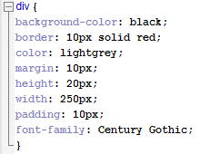
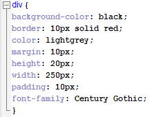

- Margins - Transparent space around the box used to distance the element from other HTML elements
- Borders - The outside edge of the box, encasing the padding and content
- Padding - Transparent space around the content used to distance the border from the content
- Content - Where all of the text and images are found in the element
 

Here we can see the CSS style setting for a Box Model. Inside it, we define the margin, border and padding size in order to determine the look of our box.